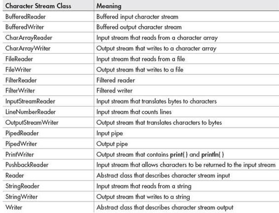
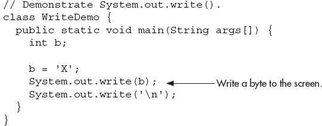
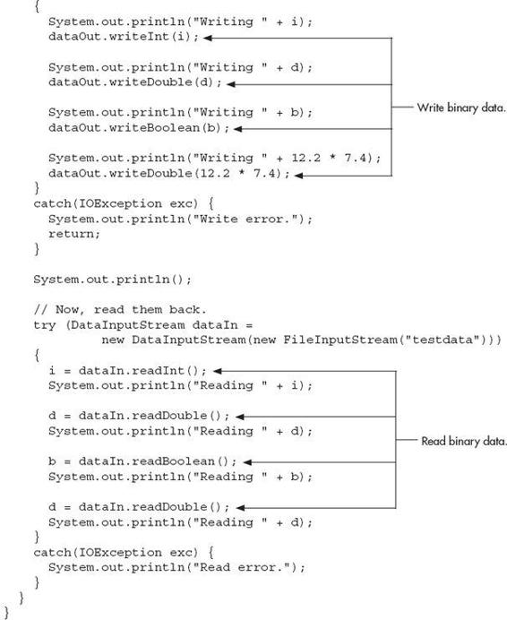
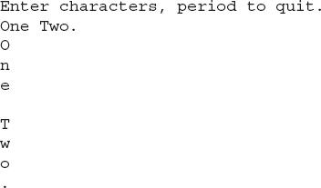
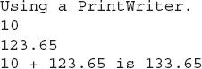
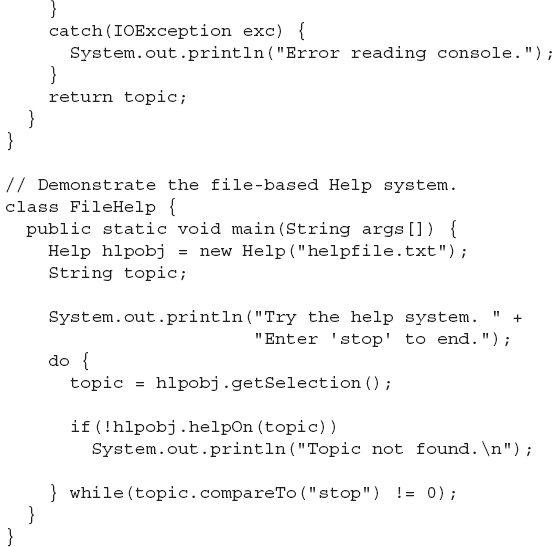

Chapter 10
Using I/O
Key Skills & Concepts
 Understand the stream
Understand the stream Know the difference between byte and character streams
Know Java’s byte stream classes
Know Java’s character stream classes
Know the predefined streams
Use byte streams
Use byte streams for file I/O
Automatically close a file by using try-with-resources
Read and write binary data
Use random-access files
Use character streams
Use character streams for file I/O
Apply Java’s type wrappers to convert numeric strings
Since the beginning of this book, you have been using parts of the Java I/O system, such as println( ). However, you have been doing so without much formal explanation. Because the Java I/O system is based upon a hierarchy of classes, it was not possible to present its theory and details without first discussing classes, inheritance, and exceptions. Now it is time to examine Java’s approach to I/O in detail.
Be forewarned, Java’s I/O system is quite large, containing many classes, interfaces, and methods. Part of the reason for its size is that Java defines two complete I/O systems: one for byte I/O and the other for character I/O. It won’t be possible to discuss every aspect of Java’s I/O here. (An entire book could easily be dedicated to Java’s I/O system!) This chapter will, however, introduce you to the most important and commonly used features. Fortunately, Java’s I/O system is cohesive and consistent; once you understand its fundamentals, the rest of the I/O system is easy to master.
Before we begin, an important point needs to be made. The I/O classes described in this chapter support text-based console I/O and file I/O. They are not used to create graphical user interfaces (GUIs). Thus, you will not use them to create windowed applications, for example. However, Java does include substantial support for building graphical user interfaces. The basics of GUI programming are found in Chapter 15, where applets are introduced; Chapter 16, which offers an introduction to Swing; and Chapter 17, which presents an overview of JavaFX. (Swing and JavaFX are two of Java’s GUI toolkits.)
Java’s I/O Is Built upon Streams
Java programs perform I/O through streams. An I/O stream is an abstraction that either produces or consumes information. A stream is linked to a physical device by the Java I/O system. All streams behave in the same manner, even if the actual physical devices they are linked to differ. Thus, the same I/O classes and methods can be applied to different types of devices. For example, the same methods that you use to write to the console can also be used to write to a disk file. Java implements I/O streams within class hierarchies defined in the java.io package.
Byte Streams and Character Streams
Modern versions of Java define two types of I/O streams: byte and character. (The original version of Java defined only the byte stream, but character streams were quickly added.) Byte streams provide a convenient means for handling input and output of bytes. They are used, for example, when reading or writing binary data. They are especially helpful when working with files. Character streams are designed for handling the input and output of characters. They use Unicode and, therefore, can be internationalized. Also, in some cases, character streams are more efficient than byte streams.
The fact that Java defines two different types of streams makes the I/O system quite large because two separate sets of class hierarchies (one for bytes, one for characters) are needed. The sheer number of I/O classes can make the I/O system appear more intimidating than it actually is. Just remember, for the most part, the functionality of byte streams is paralleled by that of the character streams.
One other point: At the lowest level, all I/O is still byte-oriented. The character-based streams simply provide a convenient and efficient means for handling characters.
The Byte Stream Classes
Byte streams are defined by using two class hierarchies. At the top of these are two abstract classes: InputStream and OutputStream. InputStream defines the characteristics common to byte input streams and OutputStream describes the behavior of byte output streams.
From InputStream and OutputStream are created several concrete subclasses that offer varying functionality and handle the details of reading and writing to various devices, such as disk files. The byte stream classes are shown in Table 10-1. Don’t be overwhelmed by the number of different classes. Once you can use one byte stream, the others are easy to master.
Table 10-1 The Byte Stream Classes
The Character Stream Classes
Character streams are defined by using two class hierarchies topped by these two abstract classes: Reader and Writer. Reader is used for input, and Writer is used for output. Concrete classes derived from Reader and Writer operate on Unicode character streams.
From Reader and Writer are derived several concrete subclasses that handle various I/O situations. In general, the character-based classes parallel the byte-based classes. The character stream classes are shown in Table 10-2.

Table 10-2 The Character Stream I/O Classes
The Predefined Streams
As you know, all Java programs automatically import the java.lang package. This package defines a class called System, which encapsulates several aspects of the run-time environment. Among other things, it contains three predefined stream variables, called in, out, and err. These fields are declared as public, final, and static within System. This means that they can be used by any other part of your program and without reference to a specific System object.
System.out refers to the standard output stream. By default, this is the console. System.in refers to standard input, which is by default the keyboard. System.err refers to the standard error stream, which is also the console by default. However, these streams can be redirected to any compatible I/O device.
System.in is an object of type InputStream; System.out and System.err are objects of type PrintStream. These are byte streams, even though they are typically used to read and write characters from and to the console. The reason they are byte and not character streams is that the predefined streams were part of the original specification for Java, which did not include the character streams. As you will see, it is possible to wrap these within character-based streams if desired.
Using the Byte Streams
We will begin our examination of Java’s I/O with the byte streams. As explained, at the top of the byte stream hierarchy are the InputStream and OutputStream classes. Table 10-3 shows the methods in InputStream, and Table 10-4 shows the methods in OutputStream. In general, the methods in InputStream and OutputStream can throw an IOException on error. The methods defined by these two abstract classes are available to all of their subclasses. Thus, they form a minimal set of I/O functions that all byte streams will have.
Table 10-3 The Methods Defined by InputStream
Table 10-4 The Methods Defined by OutputStream
Reading Console Input
Originally, the only way to perform console input was to use a byte stream, and much Java code still uses the byte streams exclusively. Today, you can use byte or character streams. For commercial code, the preferred method of reading console input is to use a character-oriented stream. Doing so makes your program easier to internationalize and easier to maintain.
It is also more convenient to operate directly on characters rather than converting back and forth between characters and bytes. However, for sample programs, simple utility programs for your own use, and applications that deal with raw keyboard input, using the byte streams is acceptable. For this reason, console I/O using byte streams is examined here.
Because System.in is an instance of InputStream, you automatically have access to the methods defined by InputStream. Unfortunately, InputStream defines only one input method, read( ), which reads bytes. There are three versions of read( ), which are shown here:
int read( ) throws IOException
int read(byte data[ ]) throws IOException
int read(byte data[ ], int start, int max) throws IOException
In Chapter 3, you saw how to use the first version of read( ) to read a single character from the keyboard (from System.in). It returns –1 when the end of the stream is encountered. The second version reads bytes from the input stream and puts them into data until either the array is full, the end of stream is reached, or an error occurs. It returns the number of bytes read, or –1 when the end of the stream is encountered. The third version reads input into data beginning at the location specified by start. Up to max bytes are stored. It returns the number of bytes read, or –1 when the end of the stream is reached. All throw an IOException when an error occurs. When reading from System.in, pressing ENTER generates an end-of-stream condition.
Here is a program that demonstrates reading an array of bytes from System.in. Notice that any I/O exceptions that might be generated are simply thrown out of main( ). Such an approach is common when reading from the console, but you can handle these types of errors yourself, if you choose.
Here is a sample run:
Writing Console Output
As is the case with console input, Java originally provided only byte streams for console output. Java 1.1 added character streams. For the most portable code, character streams are recommended. Because System.out is a byte stream, however, byte-based console output is still widely used. In fact, all of the programs in this book up to this point have used it! Thus, it is examined here.
Console output is most easily accomplished with print( ) and println( ), with which you are already familiar. These methods are defined by the class PrintStream (which is the type of the object referenced by System.out). Even though System.out is a byte stream, it is still acceptable to use this stream for simple console output.
Since PrintStream is an output stream derived from OutputStream, it also implements the low-level method write( ). Thus, it is possible to write to the console by using write( ). The simplest form of write( ) defined by PrintStream is shown here:
void write(int byteval)
This method writes the byte specified by byteval to the file. Although byteval is declared as an integer, only the low-order 8 bits are written. Here is a short example that uses write( ) to output the character X followed by a new line:

You will not often use write( ) to perform console output (although it might be useful in some situations), since print( ) and println( ) are substantially easier to use.
PrintStream supplies two additional output methods: printf( ) and format( ). Both give you detailed control over the precise format of data that you output. For example, you can specify the number of decimal places displayed, a minimum field width, or the format of a negative value. Although we won’t be using these methods in the examples in this book, they are features that you will want to look into as you advance in your knowledge of Java.
Reading and Writing Files Using Byte Streams
Java provides a number of classes and methods that allow you to read and write files. Of course, the most common types of files are disk files. In Java, all files are byte-oriented, and Java provides methods to read and write bytes from and to a file. Thus, reading and writing files using byte streams is very common. However, Java allows you to wrap a byte-oriented file stream within a character-based object, which is shown later in this chapter.
To create a byte stream linked to a file, use FileInputStream or FileOutputStream. To open a file, simply create an object of one of these classes, specifying the name of the file as an argument to the constructor. Once the file is open, you can read from or write to it.
Inputting from a File
A file is opened for input by creating a FileInputStream object. Here is a commonly used constructor:
FileInputStream(String fileName) throws FileNotFoundException
Here, fileName specifies the name of the file you want to open. If the file does not exist, then FileNotFoundException is thrown. FileNotFoundException is a subclass of IOException.
To read from a file, you can use read( ). The version that we will use is shown here:
int read( ) throws IOException
Each time it is called, read( ) reads a single byte from the file and returns it as an integer value. It returns –1 when the end of the file is encountered. It throws an IOException when an error occurs. Thus, this version of read( ) is the same as the one used to read from the console.
When you are done with a file, you must close it by calling close( ). Its general form is shown here:
void close( ) throws IOException
Closing a file releases the system resources allocated to the file, allowing them to be used by another file. Failure to close a file can result in “memory leaks” because of unused resources remaining allocated.
The following program uses read( ) to input and display the contents of a text file, the name of which is specified as a command-line argument. Notice how the try/catch blocks handle I/O errors that might occur.
Notice that the preceding example closes the file stream after the try block that reads the file has completed. Although this approach is occasionally useful, Java supports a variation that is often a better choice. The variation is to call close( ) within a finally block. In this approach, all of the methods that access the file are contained within a try block, and the finally block is used to close the file. This way, no matter how the try block terminates, the file is closed. Assuming the preceding example, here is how the try block that reads the file can be recoded:
One advantage to this approach in general is that if the code that accesses a file terminates because of some non-I/O-related exception, the file is still closed by the finally block. Although not an issue in this example (or most other example programs) because the program simply ends if an unexpected exception occurs, this can be a major source of trouble in larger programs. Using finally avoids this trouble.
Sometimes it’s easier to wrap the portions of a program that open the file and access the file within a single try block (rather than separating the two), and then use a finally block to close the file. For example, here is another way to write the ShowFile program:
In this approach, notice that fin is initialized to null. Then, in the finally block, the file is closed only if fin is not null. This works because fin will be non-null only if the file was successfully opened. Thus, close( ) will not be called if an exception occurs while opening the file.
It is possible to make the try/catch sequence in the preceding example a bit more compact. Because FileNotFoundException is a subclass of IOException, it need not be caught separately. For example, this catch clause could be used to catch both exceptions, eliminating the need to catch FileNotFoundException separately. In this case, the standard exception message, which describes the error, is displayed.
Ask the Expert
Q: I noticed that read( ) returns –1 when the end of the file has been reached, but that it does not have a special return value for a file error. Why not?
A: In Java, errors are handled by exceptions. Thus, if read( ), or any other I/O method, returns a value, it means that no error has occurred. This is a much cleaner way than handling I/O errors by using special error codes.
In this approach, any error, including an error opening the file, will simply be handled by the single catch statement. Because of its compactness, this approach is used by most of the I/O examples in this book. Be aware, however, that it will not be appropriate in cases in which you want to deal separately with a failure to open a file, such as might be caused if a user mistypes a file name. In such a situation, you might want to prompt for the correct name, for example, before entering a try block that accesses the file.
Writing to a File
To open a file for output, create a FileOutputStream object. Here are two commonly used constructors:
FileOutputStream(String fileName) throws FileNotFoundException
FileOutputStream(String fileName, boolean append)
throws FileNotFoundException
If the file cannot be created, then FileNotFoundException is thrown. In the first form, when an output file is opened, any preexisting file by the same name is destroyed. In the second form, if append is true, then output is appended to the end of the file. Otherwise, the file is overwritten.
To write to a file, you will use the write( ) method. Its simplest form is shown here:
void write(int byteval) throws IOException
This method writes the byte specified by byteval to the file. Although byteval is declared as an integer, only the low-order 8 bits are written to the file. If an error occurs during writing, an IOException is thrown.
Once you are done with an output file, you must close it using close( ), shown here:
void close( ) throws IOException
Closing a file releases the system resources allocated to the file, allowing them to be used by another file. It also ensures that any output remaining in an output buffer is actually written to the physical device.
The following example copies a text file. The names of the source and destination files are specified on the command line.
Automatically Closing a File
In the preceding section, the example programs have made explicit calls to close( ) to close a file once it is no longer needed. This is the way files have been closed since Java was first created. As a result, this approach is widespread in existing code. Furthermore, this approach is still valid and useful. However, beginning with JDK 7, Java has included a feature that offers another, more streamlined way to manage resources, such as file streams, by automating the closing process. It is based on another version of the try statement called try-with-resources, and is sometimes referred to as automatic resource management. The principal advantage of try-with-resources is that it prevents situations in which a file (or other resource) is inadvertently not released after it is no longer needed. As explained, forgetting to close a file can result in memory leaks and could lead to other problems.
The try-with-resources statement has this general form:
Here, resource-specification is a statement that declares and initializes a resource, such as a file. It consists of a variable declaration in which the variable is initialized with a reference to the object being managed. When the try block ends, the resource is automatically released. In the case of a file, this means that the file is automatically closed. (Thus, there is no need to call close( ) explicitly.) A try-with-resources statement can also include catch and finally clauses.
The try-with-resources statement can be used only with those resources that implement the AutoCloseable interface defined by java.lang. This interface defines the close( ) method. AutoCloseable is inherited by the Closeable interface defined in java.io. Both interfaces are implemented by the stream classes, including FileInputStream and FileOutputStream. Thus, try-with-resources can be used when working with streams, including file streams.
As a first example of automatically closing a file, here is a reworked version of the ShowFile program that uses it:
In the program, pay special attention to how the file is opened within the try-with-resources statement:
Notice how the resource-specification portion of the try declares a FileInputStream called fin, which is then assigned a reference to the file opened by its constructor. Thus, in this version of the program the variable fin is local to the try block, being created when the try is entered. When the try is exited, the file associated with fin is automatically closed by an implicit call to close( ). You don’t need to call close( ) explicitly, which means that you can’t forget to close the file. This is a key advantage of automatic resource management.
It is important to understand that the resource declared in the try statement is implicitly final. This means that you can’t assign to the resource after it has been created. Also, the scope of the resource is limited to the try-with-resources statement.
You can manage more than one resource within a single try statement. To do so, simply separate each resource specification with a semicolon. The following program shows an example. It reworks the CopyFile program shown earlier so that it uses a single try-with-resources statement to manage both fin and fout.
In this program, notice how the input and output files are opened within the try:
After this try block ends, both fin and fout will have been closed. If you compare this version of the program to the previous version, you will see that it is much shorter. The ability to streamline source code is a side-benefit of try-with-resources.
There is one other aspect to try-with-resources that needs to be mentioned. In general, when a try block executes, it is possible that an exception inside the try block will lead to another exception that occurs when the resource is closed in a finally clause. In the case of a “normal” try statement, the original exception is lost, being preempted by the second exception. However, with a try-with-resources statement, the second exception is suppressed. It is not, however, lost. Instead, it is added to the list of suppressed exceptions associated with the first exception. The list of suppressed exceptions can be obtained by use of the getSuppressed( ) method defined by Throwable.
Because of its advantages, try-with-resources will be used by the remaining examples in this chapter. However, it is still very important that you are familiar with the traditional approach shown earlier in which close( ) is called explicitly. There are several reasons for this. First, there is legacy code that still relies on the traditional approach. It is important that all Java programmers be fully versed in and comfortable with the traditional approach when maintaining or updating this older code. Second, for a period of time, you might need to work in an environment that predates JDK 7. In such a situation, the try-with-resources statement will not be available and the traditional approach must be employed. Finally, there may be cases in which explicitly closing a resource is more appropriate than the automated approach. The foregoing notwithstanding, if you are using JDK 7, JDK 8, or later, then you will usually want to use the new, automated approach to resource management. It offers a streamlined, robust alternative to the traditional approach.
Reading and Writing Binary Data
So far, we have just been reading and writing bytes containing ASCII characters, but it is possible—indeed, common—to read and write other types of data. For example, you might want to create a file that contains ints, doubles, or shorts. To read and write binary values of the Java primitive types, you will use DataInputStream and DataOutputStream.
DataOutputStream implements the DataOutput interface. This interface defines methods that write all of Java’s primitive types to a file. It is important to understand that this data is written using its internal, binary format, not its human-readable text form. Several commonly used output methods for Java’s primitive types are shown in Table 10-5. Each throws an IOException on failure.
Table 10-5 Commonly Used Output Methods Defined by DataOutputStream
Here is the constructor for DataOutputStream. Notice that it is built upon an instance of OutputStream.
DataOutputStream(OutputStream outputStream)
Here, outputStream is the stream to which data is written. To write output to a file, you can use the object created by FileOutputStream for this parameter.
DataInputStream implements the DataInput interface, which provides methods for reading all of Java’s primitive types. These methods are shown in Table 10-6, and each can throw an IOException. DataInputStream uses an InputStream instance as its foundation, overlaying it with methods that read the various Java data types. Remember that DataInputStream reads data in its binary format, not its human-readable form. The constructor for DataInputStream is shown here:
Table 10-6 Commonly Used Input Methods Defined by DataInputStream
DataInputStream(InputStream inputStream)
Here, inputStream is the stream that is linked to the instance of DataInputStream being created. To read input from a file, you can use the object created by FileInputStream for this parameter.
Here is a program that demonstrates DataOutputStream and DataInputStream. It writes and then reads back various types of data to and from a file.

The output from the program is shown here.
| Try This 10-1 |
A File Comparison Utility |
This project develops a simple, yet useful file comparison utility. It works by opening both files to be compared and then reading and comparing each corresponding set of bytes. If a mismatch is found, the files differ. If the end of each file is reached at the same time and if no mismatches have been found, then the files are the same. Notice that it uses a try-with-resources statement to automatically close the files.
1. Create a file called CompFiles.java.
2. Into CompFiles.java, add the following program:
3. To try CompFiles, first copy CompFiles.java to a file called temp. Then, try this command line:
The program will report that the files are the same. Next, compare CompFiles.java to CopyFile.java (shown earlier) using this command line:
These files differ and CompFiles will report this fact.
4. On your own, try enhancing CompFiles with various options. For example, add an option that ignores the case of letters. Another idea is to have CompFiles display the position within the file where the files differ.
Random-Access Files
Up to this point, we have been using sequential files, which are files that are accessed in a strictly linear fashion, one byte after another. However, Java also allows you to access the contents of a file in random order. To do this, you will use RandomAccessFile, which encapsulates a random-access file. RandomAccessFile is not derived from InputStream or OutputStream. Instead, it implements the interfaces DataInput and DataOutput, which define the basic I/O methods. It also supports positioning requests—that is, you can position the file pointer within the file. The constructor that we will be using is shown here:
RandomAccessFile(String fileName, String access)
throws FileNotFoundException
Here, the name of the file is passed in fileName and access determines what type of file access is permitted. If it is "r", the file can be read but not written. If it is "rw", the file is opened in read-write mode.
The method seek( ), shown here, is used to set the current position of the file pointer within the file:
void seek(long newPos) throws IOException
Here, newPos specifies the new position, in bytes, of the file pointer from the beginning of the file. After a call to seek( ), the next read or write operation will occur at the new file position.
RandomAccessFile implements the read( ) and write( ) methods. It also implements the DataInput and DataOuput interfaces, which means that methods to read and write the primitive types, such as readInt( ) and writeDouble( ), are available.
Here is an example that demonstrates random-access I/O. It writes six doubles to a file and then reads them back in nonsequential order.
The output from the program is shown here.
Notice how each value is located. Since each double value is 8 bytes long, each value starts on an 8-byte boundary. Thus, the first value is located at zero, the second begins at byte 8, the third starts at byte 16, and so on. Thus, to read the fourth value, the program seeks to location 24.
Ask the Expert
Q: In looking through the documentation provided by the JDK, I noticed a class called Console. Is this a class that I can use to perform console-based I/O?
A: The short answer is Yes. The Console class was added by JDK 6, and it is used to read from and write to the console. Console is primarily a convenience class because most of its functionality is available through System.in and System.out. However, its use can simplify some types of console interactions, especially when reading strings from the console.
Console supplies no constructors. Instead, a Console object is obtained by calling System.console( ). It is shown here.
static Console console( )
If a console is available, then a reference to it is returned. Otherwise, null is returned. A console may not be available in all cases, such as when a program runs as a background task. Therefore, if null is returned, no console I/O is possible.
Console defines several methods that perform I/O, such as readLine( ) and printf( ). It also defines a method called readPassword( ), which can be used to obtain a password. It lets your application read a password without echoing what is typed. You can also obtain a reference to the Reader and the Writer that are attached to the console. In general, Console is a class that you may find useful for some types of applications.
Using Java’s Character-Based Streams
As the preceding sections have shown, Java’s byte streams are both powerful and flexible. However, they are not the ideal way to handle character-based I/O. For this purpose, Java defines the character stream classes. At the top of the character stream hierarchy are the abstract classes Reader and Writer. Table 10-7 shows the methods in Reader, and Table 10-8 shows the methods in Writer. Most of the methods can throw an IOException on error. The methods defined by these two abstract classes are available to all of their subclasses. Thus, they form a minimal set of I/O functions that all character streams will have.
Table 10-7 The Methods Defined by Reader
Table 10-8 The Methods Defined by Writer
Console Input Using Character Streams
For code that will be internationalized, inputting from the console using Java’s character-based streams is a better, more convenient way to read characters from the keyboard than is using the byte streams. However, since System.in is a byte stream, you will need to wrap System.in inside some type of Reader. The best class for reading console input is BufferedReader, which supports a buffered input stream. However, you cannot construct a BufferedReader directly from System.in. Instead, you must first convert it into a character stream. To do this, you will use InputStreamReader, which converts bytes to characters. To obtain an InputStreamReader object that is linked to System.in, use the constructor shown next:
InputStreamReader(InputStream inputStream)
Since System.in refers to an object of type InputStream, it can be used for inputStream.
Next, using the object produced by InputStreamReader, construct a BufferedReader using the constructor shown here:
BufferedReader(Reader inputReader)
Here, inputReader is the stream that is linked to the instance of BufferedReader being created. Putting it all together, the following line of code creates a BufferedReader that is connected to the keyboard.
After this statement executes, br will be a character-based stream that is linked to the console through System.in.
Reading Characters
Characters can be read from System.in using the read( ) method defined by BufferedReader in much the same way as they were read using byte streams. Here are three versions of read( ) supported by BufferedReader.
int read( ) throws IOException
int read(char data[ ]) throws IOException
int read(char data[ ], int start, int max) throws IOException
The first version of read( ) reads a single Unicode character. It returns –1 when the end of the stream is reached. The second version reads characters from the input stream and puts them into data until either the array is full, the end of stream is reached, or an error occurs. It returns the number of characters read or –1 at the end of the stream. The third version reads input into data beginning at the location specified by start. Up to max characters are stored. It returns the number of characters read or –1 when the end of the stream is encountered. All throw an IOException on error. When reading from System.in, pressing ENTER generates an end-of-stream condition.
The following program demonstrates read( ) by reading characters from the console until the user types a period. Notice that any I/O exceptions that might be generated are simply thrown out of main( ). As mentioned earlier in this chapter, such an approach is common when reading from the console. Of course, you can handle these types of errors under program control, if you choose.
Here is a sample run:

Reading Strings
To read a string from the keyboard, use the version of readLine( ) that is a member of the BufferedReader class. Its general form is shown here:
String readLine( ) throws IOException
It returns a String object that contains the characters read. It returns null if an attempt is made to read when at the end of the stream.
The following program demonstrates BufferedReader and the readLine( ) method. The program reads and displays lines of text until you enter the word “stop”.
Console Output Using Character Streams
While it is still permissible to use System.out to write to the console under Java, its use is recommended mostly for debugging purposes or for sample programs such as those found in this book. For real-world programs, the preferred method of writing to the console when using Java is through a PrintWriter stream. PrintWriter is one of the character-based classes. As explained, using a character-based class for console output makes it easier to internationalize your program.
PrintWriter defines several constructors. The one we will use is shown here:
PrintWriter(OutputStream outputStream, boolean flushingOn)
Here, outputStream is an object of type OutputStream and flushingOn controls whether Java flushes the output stream every time a println( ) method (among others) is called. If flushingOn is true, flushing automatically takes place. If false, flushing is not automatic.
PrintWriter supports the print( ) and println( ) methods for all types including Object. Thus, you can use these methods in just the same way as they have been used with System.out. If an argument is not a primitive type, the PrintWriter methods will call the object’s toString( ) method and then print out the result.
To write to the console using a PrintWriter, specify System.out for the output stream and flush the stream after each call to println( ). For example, this line of code creates a PrintWriter that is connected to console output.
The following application illustrates using a PrintWriter to handle console output.
The output from this program is

Remember that there is nothing wrong with using System.out to write simple text output to the console when you are learning Java or debugging your programs. However, using a PrintWriter will make your real-world applications easier to internationalize. Since no advantage is to be gained by using a PrintWriter in the sample programs shown in this book, for convenience we will continue to use System.out to write to the console.
File I/O Using Character Streams
Although byte-oriented file handling is the most common, it is possible to use character-based streams for this purpose. The advantage to the character streams is that they operate directly on Unicode characters. Thus, if you want to store Unicode text, the character streams are certainly your best option. In general, to perform character-based file I/O, you will use the FileReader and FileWriter classes.
Using a FileWriter
FileWriter creates a Writer that you can use to write to a file. Two commonly used constructors are shown here:
FileWriter(String fileName) throws IOException
FileWriter(String fileName, boolean append) throws IOException
Here, fileName is the full path name of a file. If append is true, then output is appended to the end of the file. Otherwise, the file is overwritten. Either throws an IOException on failure. FileWriter is derived from OutputStreamWriter and Writer. Thus, it has access to the methods defined by these classes.
Here is a simple key-to-disk utility that reads lines of text entered at the keyboard and writes them to a file called "test.txt". Text is read until the user enters the word "stop". It uses a FileWriter to output to the file.
Using a FileReader
The FileReader class creates a Reader that you can use to read the contents of a file. A commonly used constructor is shown here:
FileReader(String fileName) throws FileNotFoundException
Here, fileName is the full path name of a file. It throws a FileNotFoundException if the file does not exist. FileReader is derived from InputStreamReader and Reader. Thus, it has access to the methods defined by these classes.
The following program creates a simple disk-to-screen utility that reads a text file called "test.txt" and displays its contents on the screen. Thus, it is the complement of the key-to-disk utility shown in the previous section.
In this example, notice that the FileReader is wrapped in a BufferedReader. This gives it access to readLine( ). Also, closing the BufferedReader, br in this case, automatically closes the file.
Ask the Expert
Q: I have heard about another I/O package called NIO. Can you tell me about it?
A: Originally called New I/O, NIO was added to Java by JDK 1.4. It supports a channel-based approach to I/O operations. The NIO classes are contained in java.nio and its subordinate packages, such as java.nio.channels and java.nio.charset.
NIO is built on two foundational items: buffers and channels. A buffer holds data. A channel represents an open connection to an I/O device, such as a file or a socket. In general, to use the new I/O system, you obtain a channel to an I/O device and a buffer to hold data. You then operate on the buffer, inputting or outputting data as needed.
Two other entities used by NIO are charsets and selectors. A charset defines the way that bytes are mapped to characters. You can encode a sequence of characters into bytes using an encoder. You can decode a sequence of bytes into characters using a decoder. A selector supports key-based, non-blocking, multiplexed I/O. In other words, selectors enable you to perform I/O through multiple channels. Selectors are most applicable to socket-backed channels.
Beginning with JDK 7, NIO was substantially enhanced, so much so that the term NIO.2 is often used. The improvements included three new packages (java.nio.file, java.nio.file.attribute, and java.nio.file.spi); several new classes, interfaces, and methods; and direct support for stream-based I/O. The additions greatly expanded the ways in which NIO can be used, especially with files.
It is important to understand that NIO does not replace the I/O classes found in java.io, which are discussed in this chapter. Instead, the NIO classes are designed to supplement the standard I/O system, offering an alternative approach, which can be beneficial in some circumstances.
Using Java’s Type Wrappers to Convert Numeric Strings
Before leaving the topic of I/O, we will examine a technique useful when reading numeric strings. As you know, Java’s println( ) method provides a convenient way to output various types of data to the console, including numeric values of the built-in types, such as int and double. Thus, println( ) automatically converts numeric values into their human-readable form. However, methods like read( ) do not provide a parallel functionality that reads and converts a string containing a numeric value into its internal, binary format. For example, there is no version of read( ) that reads a string such as "100" and then automatically converts it into its corresponding binary value that is able to be stored in an int variable. Instead, Java provides various other ways to accomplish this task. Perhaps the easiest is to use one of Java’s type wrappers.
Java’s type wrappers are classes that encapsulate, or wrap, the primitive types. Type wrappers are needed because the primitive types are not objects. This limits their use to some extent. For example, a primitive type cannot be passed by reference. To address this kind of need, Java provides classes that correspond to each of the primitive types.
The type wrappers are Double, Float, Long, Integer, Short, Byte, Character, and Boolean. These classes offer a wide array of methods that allow you to fully integrate the primitive types into Java’s object hierarchy. As a side benefit, the numeric wrappers also define methods that convert a numeric string into its corresponding binary equivalent. Several of these conversion methods are shown here. Each returns a binary value that corresponds to the string.
| Wrapper |
Conversion Method |
| Double |
static double parseDouble(String str) throws NumberFormatException |
| Float |
static float parseFloat(String str) throws NumberFormatException |
| Long |
static long parseLong(String str) throws NumberFormatException |
| Integer |
static int parseInt(String str) throws NumberFormatException |
| Short |
static short parseShort(String str) throws NumberFormatException |
| Byte |
static byte parseByte(String str) throws NumberFormatException |
The integer wrappers also offer a second parsing method that allows you to specify the radix.
The parsing methods give us an easy way to convert a numeric value, read as a string from the keyboard or a text file, into its proper internal format. For example, the following program demonstrates parseInt( ) and parseDouble( ). It averages a list of numbers entered by the user. It first asks the user for the number of values to be averaged. It then reads that number using readLine( ) and uses parseInt( ) to convert the string into an integer. Next, it inputs the values, using parseDouble( ) to convert the strings into their double equivalents.
Here is a sample run:
Ask the Expert
Q: What else can the primitive type wrapper classes do?
A: The primitive type wrappers provide a number of methods that help integrate the primitive types into the object hierarchy. For example, various storage mechanisms provided by the Java library, including maps, lists, and sets, work only with objects. Thus, to store an int, for example, in a list, it must be wrapped in an object. Also, all type wrappers have a method called compareTo( ), which compares the value contained within the wrapper; equals( ), which tests two values for equality; and methods that return the value of the object in various forms. The topic of type wrappers is taken up again in Chapter 12, when autoboxing is discussed.
| Try This 10-2 |
Creating a Disk-Based Help System |
In Try This 4-1, you created a Help class that displayed information about Java’s control statements. In that implementation, the help information was stored within the class itself, and the user selected help from a menu of numbered options.
Although this approach was fully functional, it is certainly not the ideal way of creating a Help system. For example, to add to or change the help information, the source code of the program needed to be modified. Also, the selection of the topic by number rather than by name is tedious, and is not suitable for long lists of topics. Here, we will remedy these shortcomings by creating a disk-based Help system.
The disk-based Help system stores help information in a help file. The help file is a standard text file that can be changed or expanded at will, without changing the Help program. The user obtains help about a topic by typing in its name. The Help system searches the help file for the topic. If it is found, information about the topic is displayed.
1. Create the help file that will be used by the Help system. The help file is a standard text file that is organized like this:
The name of each topic must be preceded by a #, and the topic name must be on a line of its own. Preceding each topic name with a # allows the program to quickly find the start of each topic. After the topic name are any number of information lines about the topic. However, there must be a blank line between the end of one topic’s information and the start of the next topic. Also, there must be no trailing spaces at the end of any help-topic lines.
Here is a simple help file that you can use to try the disk-based Help system. It stores information about Java’s control statements.
Call this file helpfile.txt.
2. Create a file called FileHelp.java.
3. Begin creating the new Help class with these lines of code.
The name of the help file is passed to the Help constructor and stored in the instance variable helpfile. Since each instance of Help will have its own copy of helpfile, each instance can use a different file. Thus, you can create different sets of help files for different sets of topics.
4. Add the helpOn( ) method shown here to the Help class. This method retrieves help on the specified topic.
The first thing to notice is that helpOn( ) handles all possible I/O exceptions itself and does not include a throws clause. By handling its own exceptions, it prevents this burden from being passed on to all code that uses it. Thus, other code can simply call helpOn( ) without having to wrap that call in a try/catch block.
The help file is opened using a FileReader that is wrapped in a BufferedReader. Since the help file contains text, using a character stream allows the Help system to be more efficiently internationalized.
The helpOn( ) method works like this. A string containing the name of the topic is passed in the what parameter. The help file is then opened. Then, the file is searched, looking for a match between what and a topic in the file. Remember, in the file, each topic is preceded by a #, so the search loop scans the file for #s. When it finds one, it then checks to see if the topic following that # matches the one passed in what. If it does, the information associated with that topic is displayed. If a match is found, helpOn( ) returns true. Otherwise, it returns false.
5. The Help class also provides a method called getSelection( ). It prompts the user for a topic and returns the topic string entered by the user.
This method creates a BufferedReader attached to System.in. It then prompts for the name of a topic, reads the topic, and returns it to the caller.
6. The entire disk-based Help system is shown here:

Ask the Expert
Q: In addition to the parse methods defined by the primitive type wrappers, is there another easy way to convert a numeric string entered at the keyboard into its equivalent binary format?
A: Yes! Another way to convert a numeric string into its internal, binary format is to use one of the methods defined by the Scanner class, packaged in java.util. Scanner reads formatted (that is, human-readable) input and converts it into its binary form. Scanner can be used to read input from a variety of sources, including the console and files. Therefore, you can use Scanner to read a numeric string entered at the keyboard and assign its value to a variable. Although Scanner contains far too many features to describe in detail, the following illustrates its basic usage.
To use Scanner to read from the keyboard, you must first create a Scanner linked to console input. To do this, you will use the following constructor:
Scanner(InputStream from)
This creates a Scanner that uses the stream specified by from as a source for input. You can use this constructor to create a Scanner linked to console input, as shown here:
This works because System.in is an object of type InputStream. After this line executes, conin can be used to read input from the keyboard.
Once you have created a Scanner, it is a simple matter to use it to read numeric input. Here is the general procedure:
1. Determine if a specific type of input is available by calling one of Scanner’s hasNextX methods, where X is the type of data desired.
2. If input is available, read it by calling one of Scanner’s nextX methods.
As the preceding indicates, Scanner defines two sets of methods that enable you to read input. The first are the hasNext methods. These include methods such as hasNextInt( ) and hasNextDouble( ), for example. Each of the hasNext methods returns true if the desired data type is the next available item in the data stream, and false otherwise. For example, calling hasNextInt( ) returns true only if the next item in the stream is the human-readable form of an integer. If the desired data is available, you can read it by calling one of Scanner’s next methods, such as nextInt( ) or nextDouble( ). These methods convert the human-readable form of the data into its internal, binary representation and return the result. For example, to read an integer, call nextInt( ).
The following sequence shows how to read an integer from the keyboard.
Using this code, if you enter the number 123 on the keyboard, then i will contain the value 123.
Technically, you can call a next method without first calling a hasNext method. However, doing so is not usually a good idea. If a next method cannot find the type of data it is looking for, it throws an InputMismatchException. For this reason, it is best to first confirm that the desired type of data is available by calling a hasNext method before calling its corresponding next method.
 Chapter 10 Self Test
Chapter 10 Self Test
1. Why does Java define both byte and character streams?
2. Even though console input and output is text-based, why does Java still use byte streams for this purpose?
3. Show how to open a file for reading bytes.
4. Show how to open a file for reading characters.
5. Show how to open a file for random-access I/O.
6. How can you convert a numeric string such as "123.23" into its binary equivalent?
7. Write a program that copies a text file. In the process, have it convert all spaces into hyphens. Use the byte stream file classes. Use the traditional approach to closing a file by explicitly calling close( ).
8. Rewrite the program described in question 7 so that it uses the character stream classes. This time, use the try-with-resources statement to automatically close the file.
9. What type of stream is System.in?
10. What does the read( ) method of InputStream return when the end of the stream is reached?
11. What type of stream is used to read binary data?
12. Reader and Writer are at the top of the ____________ class hierarchies.
13. The try-with-resources statement is used for ___________ ____________ ____________.
14. If you are using the traditional method of closing a file, then closing a file within a finally block is generally a good approach. True or False?